数字谜是指在一个数学运算式子里，有些数字或运算符号未确定，要求我们开动脑筋，进行合理的判断推理，从而解开谜底，即找到真正的数字，这种问题也被称为“虫蚀算”，是起源于中国古代、风靡世界的一种有趣的数学问题．数字谜题一般有三种情况：用汉字代替数字、用字母代替数字和用符号代替数字．
【解题技巧】
竖式数字谜是一种猜数的游戏．解竖式数字谜，就得根据有关的运算法则、数的性质（和差积商的位数，数的乘除性、奇偶性、尾数规律等）来进行正确地推理、判断．
解答竖式数字谜时应注意以下几点：
（1）空格中只能填写0、1、2、3、4、5、6、7、8、9，而且最高位不能为0；
（2）进位要留意，不能漏掉；
（3）答案有时不唯一；
（4）两数字相加，最大进位为1，三个数字相加最大进位为2；
（5）两个数字相乘，最大进位为8；
（6）相同的字母（汉字或符号）代表相同的数字，不同的字母（汉字或符号）代表不同的数字；
（7）分析算式中隐含的数量关系，选择有特征的部分作为解题的突破口；
（8）必要时应采用枚举和筛选相结合的方法，对某些数位上的数字进行合理的估计，逐步排除一些不可能的取值，缩小所求数字的取值范围；
（9）数字谜解出后，要验算一遍．
（第十四届“中环杯”初赛）下面是一个除法算式，在空格中填入合适的数字能使这个算式成立，那么被除数是____．
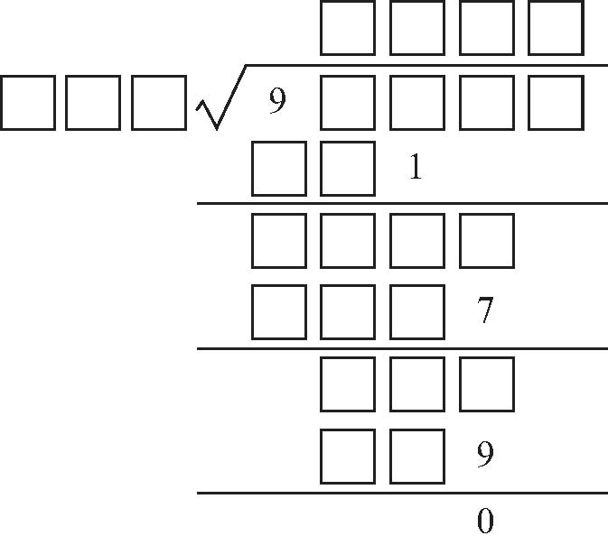
【答案】 97539．
【解析】 如下式所示，用字母代替空格中的数进行推算．
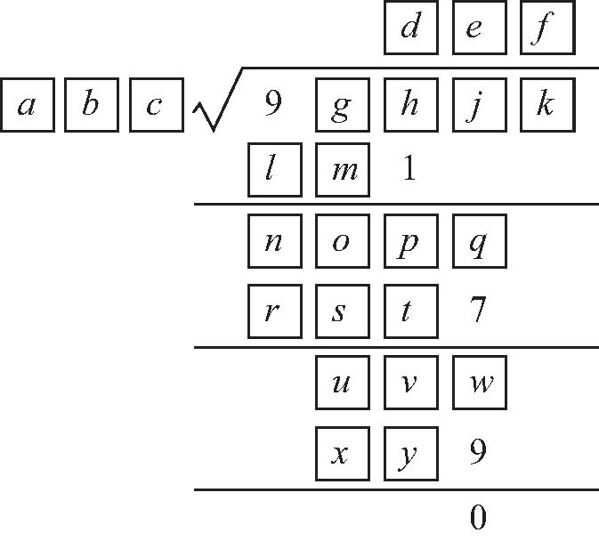
由1、7、9，可知c 、d 、e 、f 都为奇数，且c ≠5，d、e、f 互不相同．
由
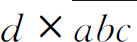
为三位数，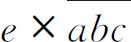
为四位数，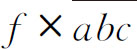
为三位数，可知e 为d、e、f 中最大的一个，所以e ≥5．若e ＝5，则
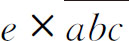
的个位为5不为7，所以e ≠5．若e ＝7，则由
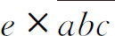
的个位为7，可知c ＝1，此时由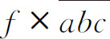
的个位为9，可知f ＝9，与e＞f 矛盾，所以e ≠7．所以e ＝9，则由
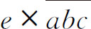
的个位为7，可知c ＝3，由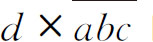
的个位为1，可知d ＝7，由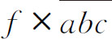
的个位为9，可知f ＝3．由
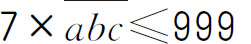
可知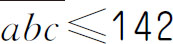
，由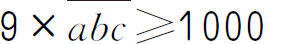
可知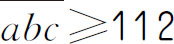
，所以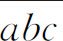
为113或123．而113×793＝89609，万位不为9，所以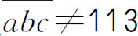
，所以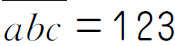
，被除数为123×793＝97539．【举一反三1】
（第十届“走美杯”决赛）在下式的每个方框中填入一个适当的数字，使得乘法竖式成立，则乘积等于____．
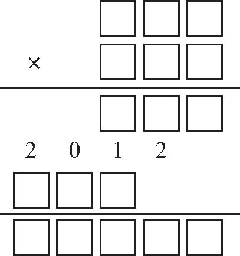
（第十四届“中环杯”决赛）下式中，在每个方框中填入一个数字，使得乘法竖式成立．则这个算式乘积的最大值与最小值之差为____．
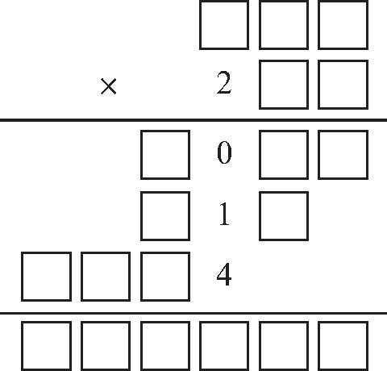
【答案】 67111．
【解析】 由已知竖式可知，因为下面乘数的百位数2乘以上面乘数得到的个位为4，所以上面乘数个位为2或7．因为下面乘数的十位数字乘上面的数得到的积为三位数，百位数字上的2乘上面的数得到的积为四位数，由于1乘上面乘数得到的积十位数为1，因此上面乘数的十位数也为1．根据题意，考虑乘积最大值，若上面乘数百位为9，经枚举，917、912均无法乘出百位为0的乘积．所以考虑上面的数百位为8，则下面乘数为215，符合要求．考虑乘积最小值，若上面的数百位最小为5，则下面乘数为212，符合要求．所以乘积的最大值与最小值之差为817×215-512×212＝67111．
【举一反三2】
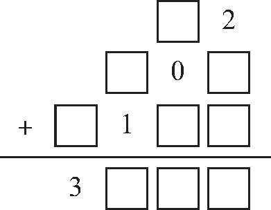
（第十一届“走美杯”初赛）将数字1～9填入下面竖式的9个方格中，每个数字只能用一次，那么和的最大值为____．
（第十四届“华杯赛”初赛）在下面的算式中，不同的汉字代表不同的数字，相同的汉字代表相同的数字．如果“华”＋“庚”＋“金”＋“杯”＋“赛”＝30，那么“金杯赛”所代表的三位数是___．
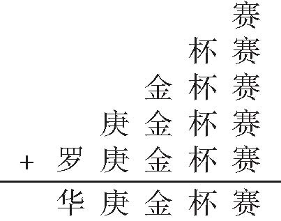
【答案】 965．
【解析】 个位上，5个“赛”相加的结果的末尾还是“赛”，由5×5＝25，5×0＝0，可得“赛”是5或0．假设“赛”是0，十位上4个“杯”相加的结果的末尾是“杯”，由4×0＝0，也就是“杯”是0，与题意不符．所以，“赛”是5，向十位上进2．十位上，“杯”×4＋2的结果的末尾是“杯”，由6×4＋2＝26，可得“杯”是6，向百位进2；百位上，“金”×3＋2的结果的末尾是“金”，由4×3＋2＝14，9×3＋2＝29，可得“金”是4或9．假设“金”是4，向千位上进1，“庚”×2＋1的末尾是“庚”，9×2＋1＝19，可得“庚”是9，向万位上进1；又“华＋庚＋金＋杯＋赛”＝30，那么“华”＝30-5-6-4-9＝6．万位上，“罗”＋1＝6，“罗”＝6-1＝5，与“赛”重复，不符合题意．因此，“金”是9，向千位上进2．千位上，“庚”×2＋2的结果的末尾是“庚”，由8×2＋2＝18，可得“庚”是8，向万位上进1．又因为“华”＋“庚”＋“金”＋“杯”＋“赛”＝30，那么“华”＝30-5-6-9-8＝2．万位上，“罗”＋1＝2，所以“罗”＝2-1＝1．
由以上可得，“金杯赛”所代表的三位数是965．
【举一反三3】
（第十六届“华杯赛”初赛）在下面加法竖式中，如果不同的汉字代表不同的数字，使得算式成立，那么四位数“华杯初赛”的最小值是____．
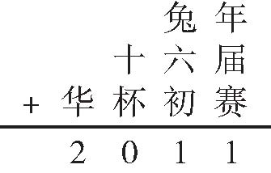
（第十三届“中环杯”决赛）在下面的数字谜中，每个字母代表一个数字．不同的字母代表了不同的数字，相同的字母代表了相同的数字．则T是几？
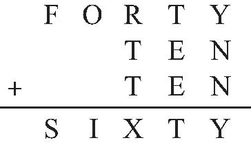
【答案】 8．
【解析】 由于被加数和结果的万位上F、S不同，所以易知千位有进位．由于个位上Y未变，所以N为0或5．若N为5，则十位上有T＋2E＋1仍为T，显然不可能．所以N为0，于是，个位上没有进位．观察十位，同样T未变，所以E为0或5．由于N已经为0，所以E为5．观察百位，由于千位数字发生了变化，所以百位必须进位，可能进1或2．若百位进1，由于千位也有进位，所以O必须为9，那么I就为0，重复了，所以百位进2，且O不能为8，否则I为0，所以O为9，I为1；由于R＋2T＋1超过20，且9已经被用过，所以T最小为6．若T为6，那么R为7或8，若R为7，则X为0，重复；若R为8，则X为1，重复，故T不为6．若T为7，那么R为6或8（5、7已用）；若R为6，则X为1，重复，若R为8，则X为3，发现0、1、3、5、7、8、9已经被用过，还剩2、4、6，显然S仅比F大1，无法满足，故T不为7；若T为8，那么R为3、4、6、7，若R为3，则X为0，重复；若R为4，则X为1，重复；若R为6，则X为3，还剩2、4、7，S、F无法满足；故R为7，X为4，还剩2、3、6，显然F为2，S为3，Y为6．综上，T为8．
【举一反三4】
（第十四届“华杯赛”初赛）下面的算式中，同一个汉字代表同一个数字，不同的汉字代表不同的数字．
团团×圆圆＝大熊猫
则“大熊猫”代表的三位数是___．
1．在空格处填上合适的数字使算式成立．
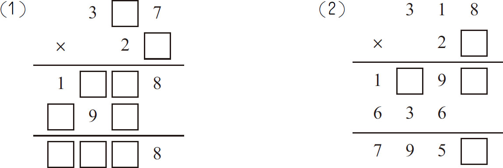
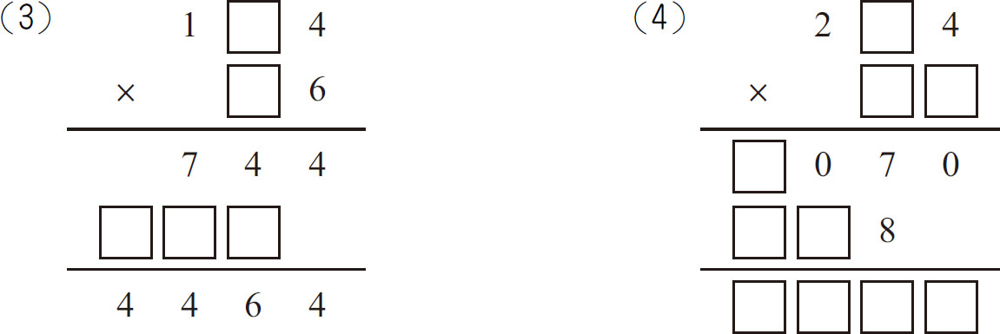
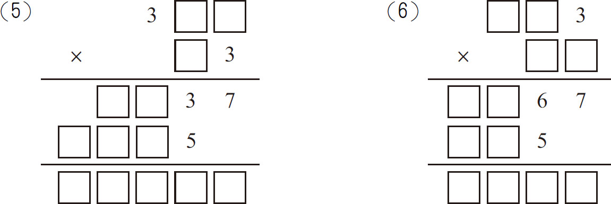
2．在下式方框内填上合适的数字使算式成立．
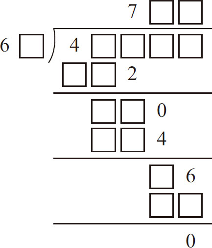
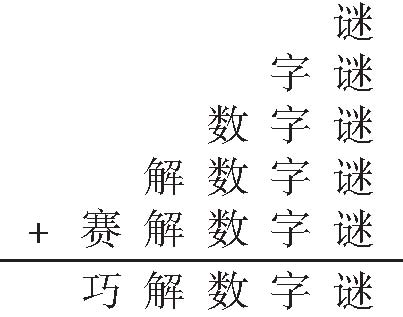
3．在右边的算式中，不同的字表示不同的数字，相同的汉字表示相同的数字，如果“巧”＋“解”＋“数”＋“字”＋“谜”＝30，那么，“数字谜”所代表的三位数是____．
4．从“＋”“-”“×”“÷”中挑选合适的符号，填入适当的地方，使下列等式成立．
55555＝1
55555＝2
55555＝3
55555＝4
5．填字谜（式中不同的汉字代表不同的数字）．那么“狗”是___，“年”是___，“好”是___．
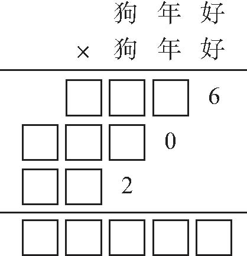
6．在下式的4个方框内填入4个不同的一位数，使左边的数都比右边的数小，并且等式成立．
□÷（□÷□÷□）＝24
7．把“＋”“-”“×”“÷”四个运算符号，分别填入下面等式的〇内，使等式成立（每个运算符号只能使用一次）．
（5〇13〇7）〇（17〇9）＝12
8．已知六位数33□□44是89的倍数，求这个六位数．
9．在下面的减法算式中，每个字母代表一个数字，不同的字母代表不同的数字．请你填上适当的数字，使竖式成立．
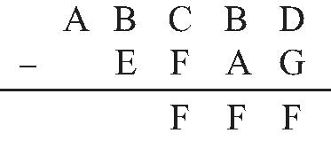
10．一个整数乘13后，乘积的最后三位数是123．那么这样的整数中，最小的数是___．